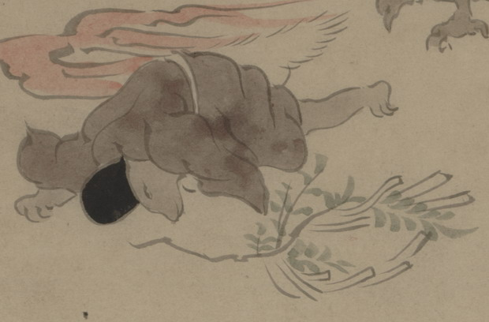

倒れ込む獣の化物。腰のあたりにふさふさとした尾のようなものが見える。肌は薄茶色く、烏帽子と茶色の衣を着て、うつぶせに倒れている。この化物が持っていたと思われる、幣状のものをつけた木の枝が落ちている。
出典：親書誌：U426_nichibunken_0150：付喪神絵詞；ツクモガミエコトバ／日付：2010／資源識別子：U426_nichibunken_0150_0088_0000
Copyright (c)2010- International Research Center for Japanese Studies, Kyoto, Japan. All rights reserved.